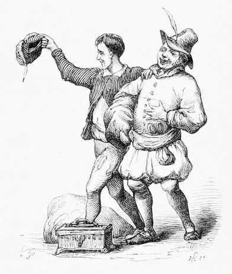
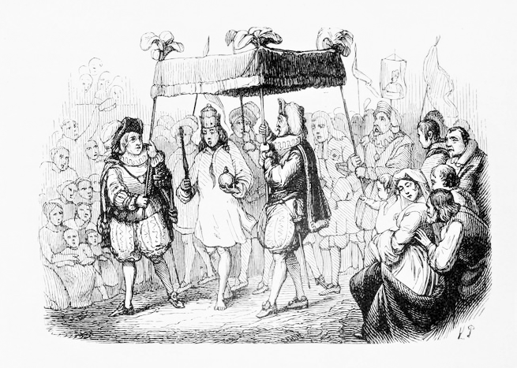

むかしむかし、とある国のある城に王さまが住んでいました。王さまはぴっかぴかの新しい服が大好きで、服を買うことばかりにお金を使っていました。王さまののぞむことといったら、いつもきれいな服を着て、みんなにいいなぁと言われることでした。戦いなんてきらいだし、おしばいだって面白くありません。だって、服を着られればそれでいいんですから。新しい服だったらなおさらです。一時間ごとに服を着がえて、みんなに見せびらかすのでした。ふつう、めしつかいに王さまはどこにいるのですか、と聞くと、「王さまは会議室にいらっしゃいます。」と言うものですが、ここの王さまはちがいます。「王さまは
城のまわりには町が広がっていました。とても大きな町で、いつも活気に満ちていました。世界中のあちこちから知らない人が毎日、おおぜいやって来ます。

ある日、二人のさぎ師が町にやって来ました。二人は人々に、自分は
「とてもきれいな色合いともようをしているのだけれど、この布はとくべつなのです。」とさぎ師は言います。「自分にふさわしくない仕事をしている人と、バカな人にはとうめいで見えない布なのです。」
その話を聞いた人々はたいそうおどろきました。たいへんなうわさになって、たちまちこのめずらしい布の話は王さまの耳にも入りました。
「そんな布があるのか。わくわくするわい。」と、服が大好きな王さまは思いました。「もしわしがその布でできた服を着れば、けらいの中からやく立たずの人間や、バカな人間が見つけられるだろう。それで服が見えるかしこいものばかり集めれば、この国ももっとにぎやかになるにちがいない。さっそくこの布で服を作らせよう。」
王さまはお金をたくさん用意し、さぎ師にわたしました。このお金ですぐにでも服を作ってくれ、とたのみました。さぎ師はよろこんで引き受けました。部屋にはた織り機を二台ならべて、すぐに仕事にとりかかりました。でも、はた織り機には何もありませんでした。糸もありません。それでも、さぎ師はいっしょうけんめい布を織っていました。いいえ、ちがうのです。ほんとうは布なんてどこにもなくて、からのはた織り機で織るふりをしているだけなのです。ときどき、材料がなくなったみたいにいちばん値段の高い
しばらくすると王さまは、ほんとうに仕事がはかどっているのか知りたくなってきました。自分が見に行ってたしかめてもいいのですが、もし布が見えなかったらどうしようと思いました。自分はバカだということになるのですから。でも王さまは王さまです。何よりも強いのですから、こんな布にこわがることはありません。でもやっぱり、自分が行く気にはなれませんでした。そこで、王さまは自分が行く前に、けらいをだれか一人行かせることにしました。けらいに布がどうなっているかを教えてもらおうというのです。このころには町の人はみんな、王さまが作らせている布がめずらしい布だということを知っていました。だから、みんなは近所の人がどんなにバカなのかとても知りたくなっていました。
そこで王さまは、けらいの中でも正直者で通っている年よりの大臣を向かわせることにしました。この大臣はとても頭がよいので、布をきっと見ることができるだろうと思ったからです。向かわせるのにこれほどぴったりの人はいません。
人のよい年よりの大臣は王さまに言われて、さぎ師の家へ向かいました。さぎ師がからのはた織り機で仕事をしている部屋に入りました。
「神さま、助けてください！」といのりながら、両目を大きく見開きました。けれども、何も見えません。はた織り機には何もないのです。
「ど、どういうことじゃ
 」と思わず口に出しそうになりましたが、しませんでした。
」と思わず口に出しそうになりましたが、しませんでした。そのとき、「大臣さん、」とさぎ師が声をかけました。「どうです？ もっと近づいてよく見てください。このもよう、いろいろな技術が使われていてすごいですし、この色合いだって美しくて、思わずうなってしまいそうでしょう？」
さぎ師はそう言って、からのはた織り機をゆびさしました。大臣はなんとかして布を見ようとしましたが、どうやっても見えません。だって、そこにはほんとうに何もないんですから。
「大変なことじゃ。」と大臣は思いました。自分はバカなのだろうか、と首をかしげました。でもそう思いたくありませんでした。大臣はまわりを見まわしました。二人のさぎ師がいるだけです。よいことに、まだ自分が布が見えない、ということを誰も気がついていません。『見えない』、と言わなければ誰も気づかないのですから。
「あのぅ、どうして何もおっしゃらないんですか？」と、さぎ師の片われがたずねました。もう一人のさぎ師はからのはた織り機でいっしょうけんめい働くふりをしています。
急に言われて、大臣はあわてました。「あ……ふぅん。とてもきれいで、たいそう美しいもんじゃなぁ。」大臣はメガネを動かして、何もないはた織り機をじっくり見ました。
「なんとみごとな
「その言葉を聞けて、ありがたきしあわせです。」二人のさぎ師が口をそろえて言いました。「では、王さまにもっと知っていただくために、布についてこまかく
さぎ師はからのはた織り機の前でしゃべりはじめました。色がこいとかうすいとか、もようがうねうねしてるとか、まっすぐとか。ことこまやかに言うのです。大臣はその説明を一言ももらさず聞き入っていました。なぜなら、大臣は王さまにもう一度同じことをまちがえずに言わなければならないからです。もしここで一言でもまちがえようものなら、あとで王さまがほんものを見たときに大臣には布が『見えなかった』と気づいてしまいます。だから大臣は聞いたことをそのまま王さまに言いました。
大臣が帰るとき、さぎ師たちはもっと金の糸や絹がほしいと言いました。布を織るためにひつようだと言うので、すぐに持ってこさせました。でもやはり、さぎ師たちは金の糸や絹を一本も使わないでみんな自分の物にしてしまいました。そして何もないからのはた織り機でずっと織るふりをつづけました。
それからまもなく、王さまはもう一人さぎ師のところに向かわせました。これも根のまっすぐな役人でした。役人の仕事は、布のはかどりぐあいと完成する日にちをしらべてくることでした。しかし、役人も大臣と同じように、見えたのはからっぽのはた織り機だけでした。なんどもなんども見ましたが、どうしてもからっぽにしか見えませんでした。
「どうなされたのですか？ もしかして、お気にめさないとか……」二人のさぎ師は不安そうにたずねました。そして何もないはずの布をまるであるかのように見せびらかせました。
「ほら、この王さまのえらさにぴったりのこのもよう、……どうでしょうか？」
さぎ師は言いますが、布はどこにもありません。
役人は思いました。
「わたしはバカではない。自分にふさわしくない仕事をしているだけだ。そうだ、バカではない。おそらく……この布はとてもふうがわりなのだろう。しかし、このことを、だれにも知られてはならないのだ……」
役人は少し考えてから、言いました。見えない布をあたかも見えているように。
「たいへんみごとな布だ！ 色合いも美しいし……
そうして城に帰った役人は王さまに向かってこう言いました。
「たいへんけっこうなものでした。」
街はそのめずらしい布のうわさでもちきりでした。うわさがどんどんもり上がっていくうちに、王さまも自分で見てみたくなってきました。日に日にその思いは強くなるのですが、いっこうに布は
さぎ師の仕事場につくと、二人はいっしょうけんめいに働いているふりをしていました。糸を一本も使わないで、まじめに仕事をしているふりをしていました。
「さぁどうです、王さまにぴったりな、たいそうりっぱな布でしょう？」
前に来たことのある二人の役人がみんなに向かって言いました。
「王さま、王さまならこの布の色合い、
そして、二人はからのはた織り機をゆびさしました。二人は他のみんなには布が見えると思っていたからです。
でも……
「なんだこれは？ 何もないじゃないか。」と、王さまは思いました。
王さまは自分がバカかもしれないと思うと、だんだんこわくなってきました。また、王さまにふさわしくないかと考えると、おそろしくもなってきました。王さまのいちばんおそれていたことでした。王さまが王さまでなくなるなんて、たえられなかったのです。
だから、王さまはさぎ師たちを見て言いました。
「まさしくそうであるな。この布がすばらしいのは、わたしもみとめるところであるぞ。」王さまはまんぞくそうにうなずいて、からっぽのはた織り機に目を向けました。何も見えないということを知られたくなかったので、からっぽでも、布があるかのように王さまは見つめました。同じように、王さまがつれてきた役人たちも見つめました。王さまが見ているよりももっと見ようとしました。でもやっぱり、何も見えてはいませんでした。
「これは美しい、美しい。」
役人たちは口々に言いました。
「王さま、この布で作ったりっぱな服を、ちかぢか行われる行進パレードのときにおめしになってはどうでしょう。」
と、誰かが王さまに言いました。そのあと、みんなが「これは王さまにふさわしい美しさだ！」とほめるものですから、王さまも役人たちもうれしくなって、大さんせいでした。そして王さまは、二人のさぎ師を『王国とくべつはた織り士』と呼ばせることにしました。
パレードの行われる前日の晩のこと、さぎ師たちは働いているように見せかけようと、十六本ものロウソクをともしていました。人々は家の外からそのようすを見て、王さまの新しい服を仕上げるのにいそがしいんだ、と思わずにはいられませんでした。さぎ師はまず布をはた織り機からはずすふりをしました。そしてハサミで切るまねをして、糸のない
「たった今、王さまの新しい服ができあがったぞ！」
王さまと大臣全員が大広間に集まりました。さぎ師はあたかも手の中に服があるように、両手を挙げてひとつひとつ見せびらかせました。
「まずズボンです！」
「そして上着に！」
「最後にマントです！」
さぎ師は言葉をまくしたてました。
「これらの服はクモの巣と同じくらいかるくできあがっております。何も身につけていないように感じる方もおられるでしょうが、それがこの服がとくべつで、かちがあるといういわれなのです。」
「まさしくその通りだ！」大臣はみんな声をそろえました。でもみんな何も見えませんでした。もともとそこには何もないんですから。
「どうか王さま、ただいまおめしになっている服をおぬぎになって下さいませんか？」
さぎ師は言いました。
「よろしければ、大きなかがみの前で王さまのお着がえをお手伝いしたいのです。」
王さまはさっそく服をぬぎました。二人のさぎ師はあれやこれやと新しい服を着つけるふりをしました。着つけおわると、王さまはあちこちからかがみにうつる自分を見ました。
「何と美しい！ ……よくおにあいです！」
その場にいただれもがそう言いました。
「この世のものとは思えなく美しい
そのとき、パレードの進行役がやって来て、王さまに言いました。「行進パレードに使うてんがい（王さませんようの大きな日がさ）が
「うむ、わたしもしたくは終わったぞ。」と、王さまは進行役に答えました。「どうだ、この服はわたしににあってるかね？」
王さまはかがみの前でくるっと回ってみせました。なぜなら王さまは自分の服に見とれているふりをしなければならなかったのですから。
お付きのめしつかいはありもしない服のすそを持たなければなりませんでした。地面に両手をのばして、何かをかかえているようなふりをしました。やはりめしつかいも何も見えていないことを知られたくなかったので、すそを持ち上げているようなまねをしているのでした。
王さまはきらびやかなてんがいの下、どうどうと行進していました。人々は通りやまどから王さまを見ていて、みんなこんなふうにさけんでいました。「ひゃぁ、新しい王さまの服はなんてめずらしいんでしょう！ それにあの長いすそと言ったら！ 本当によくおにあいだこと！」
だれも自分が見えないと言うことを気づかれないようにしていました。自分は今の仕事にふさわしくないだとか、バカだとかいうことを知られたくなかったのです。ですから、今までこれほどひょうばんのいい服はありませんでした。
「でも、王さま、はだかだよ。」
とつぜん、小さな子どもが王さまに向かって言いました。
「王さま、はだかだよ。」
「……なんてこった！ ちょっと聞いておくれ、むじゃきな子どもの言うことなんだ。」
横にいたそのこの父親が、子どもの言うことを聞いてさけびました。そして人づたいに子どもの言った言葉がどんどん、ひそひそとつたわっていきました。
「王さまははだかだぞ！」
ついに一人残らず、こうさけぶようになってしまいました。王さまは大弱りでした。王さまだってみんなの言うことが正しいと思ったからです。でも、「いまさら行進パレードをやめるわけにはいかない。」と思ったので、そのまま、今まで以上にもったいぶって歩きました。めしつかいはしかたなく、ありもしないすそを持ちつづけて王さまのあとを歩いていきましたとさ。
